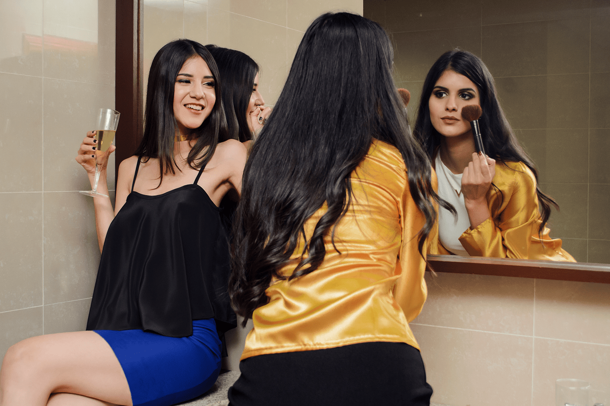

Acerca de nosotros
Sencillez, estilo y elegancia
En Yo visto Majo diseñamos ropa para la mujer moderna que le gusta verse bien en toda ocasión. Cada prenda es confeccionada con esmero y cuidando el más mínimo detalle para brindarles un producto de alta calidad. Esta marca nació en el año 2011 y a lo largo del tiempo ha salido a la luz un montón de diseños exclusivos creados por nuestra diseñadora estrella María José Báez. Las tres colecciones que puedes detallar en nuestra página web son: Summer Romance, Working Hero y After Party.